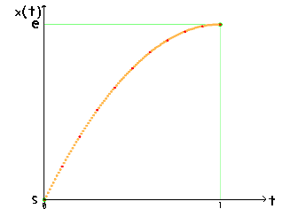

補間（パラメータ）
・補間の目的
ある値からある値まで、"良い感じ"に遷移して欲しい。
そんな時に使うのが補間(-多項式)です。
キャラクタの移動はもちろんのこと、フェードアウトのパラメータの遷移など使い所はたくさんあります。
今回はそんなよく使われる補間についてのお話です。
・1次補間
まず単純に一定速度で初期値 s から目的値 e へ遷移することが考えられます。
この場合、図のように時間tに比例して値xは線形に変化します。
図では二次元的に見えますが、目に見える変化はxだけですので実際には同一線上の遷移です。
補間は時間tを0から1までのパラメータとして、それに対応したxを取得します。
t=0でx=s , t=1でx=eです。
このことをふまえると1次補間の式は以下のようになります。
時間tは0から1ですが、例えば指定時間ts=30で遷移して欲しい場合には、毎フレーム増加するカウンタcntを用意して、
t=cnt/tsとすればcntが30になるにつれてt=1になり目的値へ到達します。
図では補間多項式に従って点を10個打つ度に赤点を打っています（全部で100点打っています）
1次補間はパラメータの変化などに用いると、最小値と最大値を設定しておくだけで中間値を勝手に補間してくれます。
・2次補間（物理補間）
1次補間では端点、特に終端で急に止まる感じが違和感になります。
（ｽｯｰっと行ってﾋﾟﾀｯと止まる感じというか・・・）
ここを自然な感じにしたい、『自然な』というと物理です。
具体的には速度 v 、初速度 v0 、加速度 a などを加味します。
高校で習う物理の基本式から考えていきましょう。
xdは変位です。
また、③式は①,②式をtについて解いたものですが今回はtを使うのでこの③式は使えません。
このままでは条件が足りないので次の条件を加えます。
『t=1で速度v=0,変位xd=xmax=e-s』
終端で遷移が止まるのでv=0,また、最終的に移動した距離はe-s、どちらも自然な考えだと思います。
この条件によりt=1,v=0より①式は
t=1,xd=xmaxより②式は
④,⑤式より
これらを一般のtについて②式に代入して
と変位xdの性質より実際の値x(t)は
なので⑦式より
この⑧式が2次補間の計算式です。物理補間とも言います。

図を見ると分かるように放物線です。
始めは大きく遷移し、最後はあまり動かずじりじりと近づいていきます。
これをease-outな補間と言います。
『ease』は"緩やかな"という意味の単語ですので、最後が(out)緩やか(ease)ということですね。
ところで⑧式を放物線の標準形に直すと
よって頂点(t,x)=(1,e),上に凸の放物線ということが分かります。
実はこのまま下に凸の放物線の式に変形しても補間多項式になります。
そちらはease-inな補間になることが分かると思います。
2次補間はキャラクターの動きなど目に見えるものに対する補間として優秀です。見た目がかなり自然になります。
逆に直接目に見えないパラメータの遷移にはあまり向きません。最終付近はあまり変わりませんので。
それでもかなり使いどころはあると思うので、1次補間では不自然な時には使ってみると良いと思います。
・3次補間
さて、順調に次数が上がってきました。次は3次式で補間してみましょう。
3次関数の一般形は以下の通りです。
ここでの条件は
『t=0の時v=0,t=1の時v=0』
です。
t=0の時x=s,t=1の時x=eと合わせて条件４つ、①式中の未知数a,b,c,dで４つ。これで解けます。
②,④式を③,⑤式に代入して、③,⑤式を連立してa,bについて解きます。
詳しい計算は省略しますが結果として
これで未知数が全て求まったので、これらと②,④式を①式へ代入すると
この⑥式が3次補間の計算式です。
ゆっくり立ち上がり、中間点で一番速くなり、ゆっくり止まる。
ease-in,ease-outな補間です。
自分はあまり使ったことがありませんが「最もよく使われる補間」だそうです。
やはり両端のeaseが良いんでしょうか。
こちらも参考にしてみてください 1.エルミート曲線軌道
・三角補間
さて、いろいろ式から補間多項式を求めてきました。
どうやら関数の形状をうまく使うと補間になるようです。
では滑らかな曲線を得るために三角関数を使ってみたらどうでしょう。
三角関数では厳密には多項式は得られないので（テイラー展開とかしない限り）今までとは異なるアプローチをします。
三角関数はsin,cos,tanの３つです。このうちtanは無限点を持ち、発散するので適しません。
sinとcosですがこの２つは位相が異なるだけで関数の形状としては同じものとみなせるので今回はcosを使います。
cos関数は以下のような形をしています。

横が位相θ[rad],縦が値です。
このθ=3.14～6.28[rad]の部分の滑らかな曲線での増加、使えそうですねー。
値は-1～1なのでこれをs～eになるように調整していけば良さそうです。
使うのは半波長分だけで十分です。
3行目が赤線、4,5行目が緑線です。
よって三角補間式は以下のようになります。
・・・あれ、この形、さっきやった3次補間に似てますね。
重ねてみましょう。
ほとんど一致しています。厳密には3次関数の方が若干easeなんですが・・
きれいな曲線の遷移といっても微小区間では多項式近似できます。
ならば計算時間がかかるcosよりも3次関数の方が優秀ですかね。
・まとめとコード
今までの補間をまとめてみました。
実際にコーディングするときはs,e,カウンタcnt,それと到達フレーム数tsを引数にして各種補間式に当てはめて計算します。
実装方法はいろいろありますが以下のようにテンプレートで作っておくと四則演算が定義されたクラスに対して使い回せます。
//線形補間
template<class T>
inline T LinearInterpolate(const T& startV,const T& endV,int nowCnt,int maxFlame){
float t=nowCnt/(float)maxFlame;
return startV*(1-t)+endV*t;
}
//物理補間(ease-out:2次補間)
template<class T>
inline T PhyInterpolate(const T& startV,const T& endV,int nowCnt,int ts){
float t=nowCnt/(float)ts;
T d=endV-startV;
return startV+2*d*t-d*t*t;
}
//3次補間(ease-in,out)
template<class T>
inline T CubicInterpolate(const T& startV,const T& endV,int nowCnt,int ts){
float t=nowCnt/(float)ts;
T d=endV-startV;
return startV-2*d*t*t*t+3*d*t*t;
}
//三角補間(ease-in,out)
template<class T>
inline T CosInterpolate(const T& startV,const T& endV,int nowCnt,int ts){
float t=nowCnt/(float)ts;
T d=endV-startV;
return startV+d*(1-cosd(180*t))/2; //cosdは「度」用のコサイン
}
/*
//使用例
//アルファブレンドのアルファ値を0から255まで200フレームかけて線形遷移(フェードイン)
int alpha=LinearInterpolate(0,255,cnt,200);
*/
補間式以外はtを求めること、引数の数と型が一致しているので補間用のクラスライブラリを作ってみるのもいいかもしれません。
実際にActionScript用のライブラリとしてTweenerがあります。（リンク先、Tweenerの外部解説サイトです）
・まとめ
というわけで基本的な補間についてまとめてみました。
パラメータを設定してるときに、変化量とか最小値、最大値の制御のためにいちいちその都度コードを書いていると煩雑です。
上のテンプレート関数を作ってからは設定が格段に楽になりました。
二次元的な動きが欲しい場合は今回の一次元補間移動をx,yそれぞれに対して行えば良いです。
次回は二次元座標間の補間について特化して解説してみたいと思います。
->補間（曲線）
・参考サイト様
マルペケつくろーどっとコム ― ゲームつくろー！
その19 補間関数あれこれ
・・・違うんです！ほとんど構成が被ったのは故意じゃないんです！
ActionScript用のライブラリ
Tweener
ActionScriptは使ったことが無いのですがC++でも使えるのでしょうか。